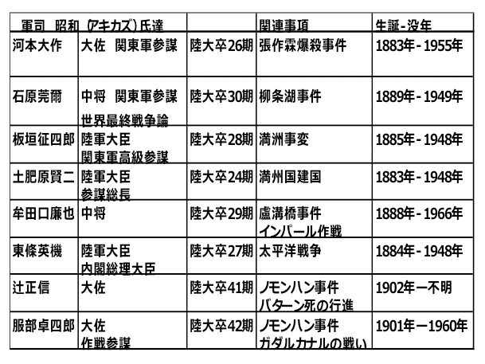
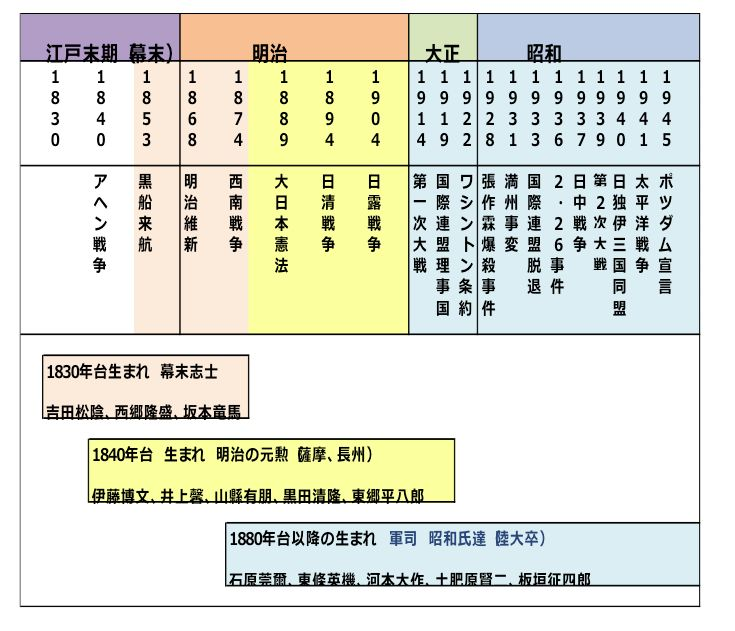
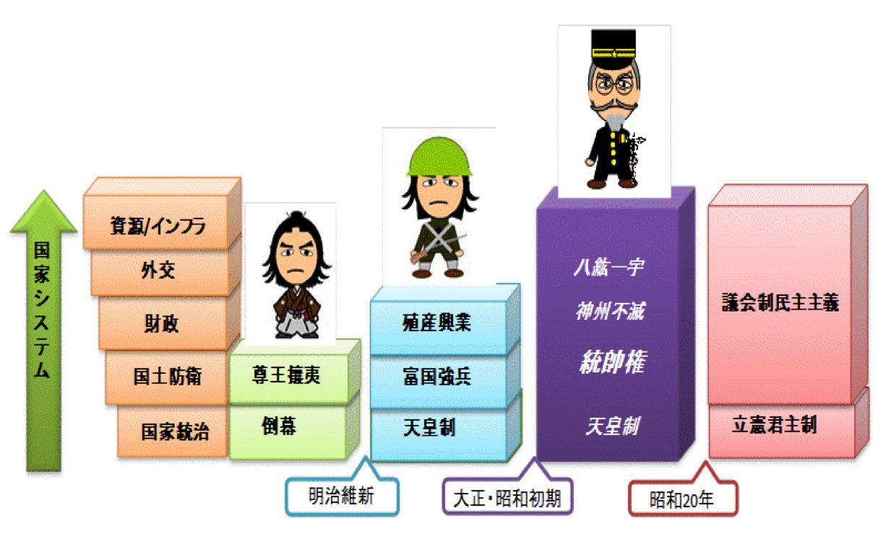
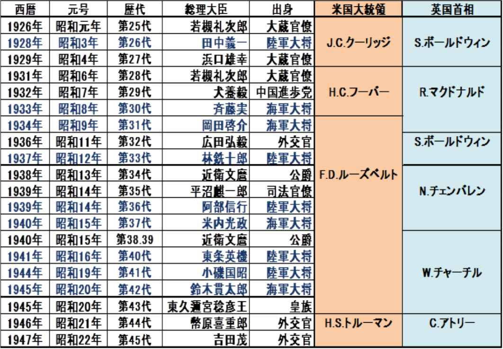

| 88分の昭和史 | |
| 照馬 和志 | |
| I-BUKKUSUPABURISSHINNGU (2015) | |
外交問題や憲法問題或いは他国が指摘する歴史問題等を含め我々の日常には未だ昭和が、特に昭和の戦争の影が残っています。
それにも関わらず、世論調査で昭和の戦争について「良く知っている」は５％
にとどまり、「ある程度知っている」は４４％
、「あまり、全く知らない」は４９％
となっています、中でも若い世代に至っては６-７割が昭和の戦争を「あまり、全く知らない」状況は何故なのでしょうか？（２０１５年２月 昭和の戦争認識度調査・・読売新聞）
幕末や明治初期は小説やテレビドラマの題材に成り易く、江戸時代以前の歴史は学校の授業で学ぶ機会がありますが、昭和初期はテレビドラマの題材の成り難く、また小説についても作家の司馬遼太郎さんが「作品の主人公との付き合いは下調べから本の完成まで凡そ５-６年密接な関係を維持する必要があるが昭和の軍人や政治家と５年も付き合うことが耐えられない」と語ったように、昭和に対し近寄り難い距離感を感じているからなのかも知れません。
戦争による多くの犠牲者のうえで今日の生活があること、当時日本が他国にどのような影響を及ぼしたかを知っておくことは、今後２０２０年の東京オリンピック開催に向け多くの外国人観光客と接する機会が増える環境では身に付けておくべき知識だと思います。
本紙の目的は「何故昭和の初期に大きな戦争が起き、そこで日本がどのような道を歩んだか」を俯瞰して見てもらうことにあります、その為時間軸の流れがかなり大雑把になってしまった傾向があります、個々の事象については「昭和史」（半藤一利著）等の関連する文献を一読戴きたいと思います。
昭和史を理解するために昭和に至る事柄を眺めてみるところから始めたいと思います。
２５０年あまり続いた江戸幕府において外国に侵略されるという発想や実感はあまり無かったのだと思います、その日本が１９世紀半ばから薩摩、長州、土佐等の志士を中心に攘夷論（外敵＝夷狄 を打ち払う）を振りかざした背景には、欧米諸国による植民地化への防衛思想がありました。
１７世紀後半に英国で起こった産業革命は原材料の調達基地及び市場としての植民地の存在が必要になり、その矛先をアジア・アフリカに向けるようになりました、明治維新より２６年前の１８４１年英国は清国へのアヘンの売り込みが拒否されたことから清国の間で阿片戦争が起こり、戦いに敗れた清国は英国に多額の賠償金と香港の割譲、更に不平等条約（南京条約）を結ぶことになりました。
英国を初めとして列強各国の植民地化が加速して行きます、所謂帝国主義の時代です。
この頃世界の約８６％
は全人口の２０％
に満たない白人によって領土を支配され、独立を維持していたのは日本、タイ、エチオピアと言った資源を持たない国でした。
日本は１８０７年ロシアによる択捉島襲撃（文化露寇）以降イギリス、アメリカの船が日本近海を荒らし、１８５３年ペリー提督率いるアメリカ合衆国海軍東インド艦隊４隻が浦賀に現れ幕府に対し開国を迫ります、この事件から明治維新までを「幕末」と呼び世相は風雲急を告げて行きます。
初めてアメリカ艦隊（黒船）を見た日本人はどのように感じたでしょうか？
当時１８歳の坂本竜馬は実家送った手紙の中で「異国船 処々に来り候由に候へば 軍（いくさ）も近き内と存じ奉り候 その節は異国の首を打取り帰国仕るべく候」と幕末の志士らしい闘争心を燃やしていますが、多くの日本人は驚きと恐怖心を抱いた事が想像できます、一方でペリー提督は冷静な目で日本及び日本人を観察しその著書の中で「日本人が一度文明世界の過去及び現在の技能を所有したならば、強力な競争者として、将来の機械工業の成功を目指す競争に加わるだろう。」と将来を予測するようなことを述べています。
「敵を知り己を知れば百戦危うからず」とは孫子の兵法にある言葉ですが、当時の日本は、欧米諸国の実力を知る由もなく、更には自国或いは自藩の兵力で何処まで対抗できるかについても知識も情報も無かったと思います、ところが思わぬことからその実力の差を目の当たりにする事態が起こりました、生麦事件です。
１８６２年薩摩藩主島津茂久の父久光は幕政改革を志し約４００人の軍勢を引連れ江戸から京都に向かいました、途中横浜の生麦に差し掛かった折り騎馬の英国人４名と遭遇、行列の先頭にいた薩摩藩士たちは英国人に対し下馬し道を譲るように身振り手振りで説明しましたが４人はそのまま久光の乗る駕籠の近くまで乗り入れた為、藩士数人が切り掛かり騎馬の英国人１名を殺害 ２名に深手の傷を負わせる事件を起こします。
この事件の処置について英国側は幕府に謝罪と賠償金を要求し、幕府の統制が及んでいない薩摩藩対しては艦隊を直接派遣して犯人の処罰と賠償金の要求を通告します、そして翌年７隻の軍艦を鹿児島湾に入港させ交渉を行いますが薩摩側が要求を拒否したため軍艦による攻撃を実施します（薩英戦争）。
英国艦隊は１０７門の大砲から艦砲射撃による攻撃を行い鹿児島城下の寺院、屋敷の大半を焼失させ、薩摩側の大砲８門、藩汽船３隻の破壊と甚大な被害を与えましたが、薩摩側が湾内に設置した砲台からの砲弾が英国艦隊の旗艦に命中し６３人の死傷者を出してしまいます、これに対し内陸部に避難した薩摩側の死傷者は９人と人的被害は少なかったのですが、日本の砲弾はほとんど敵艦に届かず、照準も定まらず苦戦を強いられてしまいます。
この戦いを通して島津久光は西洋文化の実力に日本が遠く及ばない事を認識し、英国との講和交渉を通じて賠償金の支払いに合意し代わりに戦艦・武器の購入斡旋を依頼します、世情は攘夷をかかげていましたが薩摩藩は攘夷の無意味さと日本国の危機を感じ取り開国へと舵を切り維新に向かって動き出すことになります。
ペリーが来航して５年後の１８５８年幕府はアメリカ総領事ハリスとの間で「日米修好通商条約」を締結します、これは日本の関税自主権が無くアメリカの領事裁判権を認めるという不平等条約でしたが、本来 日本を代表して外国と条約調印をする機能は京都の朝廷に属することになっており、徳川幕府は最大の大名であっても外国との条約調印を単独で行うことは越権行為となります、このことに反発した薩摩藩、長州藩の下級武士層が「尊王攘夷」「討幕」運動を展開し、１８６８年徳川幕府を倒し新政府を樹立します、所謂明治維新です。
徳川幕府に変わって誕生した明治政府は、鎖国時代とは全く異なった大胆な改革を断行します、目指したのは欧米的な国民国家の成立です。
廃藩置県によって藩を無くし中央集権制度を導入、士農工商と言った身分制度を四民平等に改め、徴兵令を公布します、こうした改革は通常既得権階級の反発を受けることになります、事実幾つかの揉め事はありましたが日本国民は短時間でこれらの改革を受け入れて行きます、その背景にはアジア諸国が味わっている植民地化への恐れと言うのが現代を生きる我々には想像もつかないほど切羽詰まったものであったと思われます。
そのことを示す一つのエピソードが１８９１年（明治２４年）に起きた「大津事件」です。
日本訪問中のロシア皇太子ニコライ（後の皇帝ニコライ２世）が滋賀県大津町に差し掛かった時、警備にあたっていた警察官が突然切りつけたロシア皇太子暗殺未遂事件です。
小国であった日本が、大国ロシアの皇太子を負傷させたとして「事件の報復にロシアが日本に攻めてくる」と日本国中に大激震が走り、さながら「恐露病」の様相を呈しました。
学校は謹慎の意を表して休校となり、神社、教会等では皇太子平癒の祈祷が行われました。
犯人の地元では犯罪者（警察官）と同じ名前の命名を禁じる条例を決議する事態となりました。
開国と同時にほとんど無防備の状態で厳しい国際社会の渦に巻き込まれて行く日本は軍備の増強に注力しますが、その原動力の一つがロシアに対する潜在的な恐怖心だったのかも知れません。
明治新政府が痛みを伴う改革を行う背景には植民地化への恐怖心がある事は前項でも述べましたが、具体的な脅威はロシアを想定しています、ロシアは１８６０年清国との間で「北京条約」を締結し不凍港であるウラジオストクを手に入れます。
ロシアが更に南に目を向けた時、日本との間に存在するのが朝鮮になります。
明治５年（１８７３年）新政府の中で「征韓論」と言う議論が起こります、日本はロシアの南下政策の防波堤として当時 清国を宗主国とする外交政策で鎖国状態を続けていた朝鮮を日本と同様に開国させたいとの思いがありました。
こうした中 １８７５年首都ソウルに近い江華島の沖で、日本の軍艦雲揚号に朝鮮軍が砲撃を加える事件が起きました（江華島事件）。雲揚号が無断で測量をおこない朝鮮側を意図的に挑発した結果でした。
日本は、江華島事件の責任を問う形で朝鮮と交渉をおこない１８７６年、日朝修好条約を結び、これにより朝鮮は開国し釜山など三港を開港しました、この条約は日本に領事裁判権を認める不平等条約でもあり、ペリーが日本に対しておこなったのと同じ事を日本は朝鮮におこなったことになります、この後朝鮮はイギリス、ドイツなどと同様の条約を結びました。
朝鮮では開国後の１８８２年、開化派（王妃閔妃-ミンビ）政権に対し守旧派（国王高宋の実父大院君）の不満が爆発し反乱（壬午軍乱）が起こりますが、開化派は清国に応援を頼み守旧派の大院君は捕らえられ上海に移送されてしまいます。
実権を掌握した閔妃派が清国依存と保守的傾向を強めると、これに対し若手官僚（金玉均ら）は日本の近代化を見習おうとクーデターを起こします（甲申政変）が閔妃派はまたしても清国に救援を頼み、袁世凱率いる清軍１５００人がクーデター派を一掃、駐留日本人も清兵により虐殺されてしまいます、この事件の処理として日清両国は将来朝鮮で内乱が生じた場合、両国が相互通知のうえで出兵すると言う条約を取り決めます（天津条約）。
１８９４年に外国資本の進出等で苦しい生活を強いられた農民の反乱が勃発（甲午農民戦争）朝鮮政府はこれを鎮圧出来ず、天津条約に基づき清国と日本に支援を要請、結果として農民の要求を受け入れた為、日清の両軍隊に撤退を要求しますが両国はこれを受け入れず、日本は朝鮮の自主独立を支援するとの名目で、王宮を軍事制圧し親日政権を樹立し新政権が清軍掃討の依頼を出す形で、朝鮮西海岸の清国艦隊に攻撃を開始しました（宣戦布告は一週間後）。
開国後の日本は北の大国ロシアと西の清国は衰退傾向にあるといえども「眠れる獅子」と恐れられた大国に囲まれています、その間にある朝鮮で内乱が続くことはいずれロシアか清国に主権が侵され日本の国防上の障害になることが懸念されました、朝鮮が開国し日本同様の自主独立体制となり、共同して国防にあたることが望ましい姿ですが、朝鮮の立場からは「日本はアメリカにより開国させられた欧米の手先」のように見えることになり、このような見方の違いがこの後の歴史にも影響を与えて行きます。
１８９４年７月から始まった日清戦争は近代兵器に勝る日本軍が豊島沖海戦、黄海海戦で勝利し、戦勝国として講和に持ち込む事となります。
１８９５年日本と清国は下関で講和条約を締結し、日本は賠償金２億両（当時の換算で約３億１千満円）と台湾、遼東半島、澎湖諸島などの割譲を勝ち取りました、また清国に朝鮮を完全なる独立国家であることを認めさせることにより、朝鮮は国号を大韓帝国と改めました。
清朝の衰退に乗じて「清国の分割」を進めていた列強各国（露、独、仏、英）は日清戦争の推移に重大性を認識し、特にロシアは南下政策を取り満洲における権益拡大を謀り、独仏の賛成を得て日本が戦争で手に入れた遼東半島の清国への返還を求めて来ました、こうした干渉に日本の世論は激しく反発しましたが、英米を含めた更なる干渉を恐れ、やむなくこれを受諾することとしました（三国干渉）。
明治維新以後日本は急激な改革を行って来ましたが、国政は薩摩、長州出身者で固められた藩閥体制であり国家・国民としての概念は未だ成立していない状況でした。
日清戦争はそうした日本にとって初めて経験した大規模な対外戦争であり、それに勝利したことで近代的な国民国家へ脱皮するとともに賠償金を元に軍備の拡張や多くの産業政策が実行されるようになり、日本人が日本国民として自信を持って諸外国と立ち向かうきっかけとなりました。
（余話１）
明治維新以降の日本では脚気が流行していました、日清戦争では特に陸軍兵士の罹患率が高く、戦争による死傷者数１２７０人に対し脚気による死亡者数は３９４４人と３倍にのぼり、これに対し海軍での脚気死亡者は僅か１人と極端な差異が認められました。
海軍では高木兼寛軍医が過去に多くの軍艦乗組員を脚気で失った経緯から臨床事例を検証し、欧米での脚気発生率が皆無であることから「米食原因説」を取り入れ麦食 パン食への献立変更を積極的に実施して罹患率の大幅改善を達成していました。
一方、陸軍は森林太郎軍医（後の森鴎外）の「細菌原因説」を取り入れ献立変更を行わず海軍の「米食原因説」を異説と決めつけ、多くの兵士を脚気で失う事になります。
その後、欧州でビタミンの研究が進み、１９２１年に慶応大学でビタミンＢ欠乏による発症が原因であることが証明され、脚気患者は急減して行きますが、日本の医療は欧米先進国には遠く及ばず外国から取り入れることは多くありました。
またこの事例から陸軍の「頑固さ」が一例として表れ始めたように思います。
日清戦争の敗戦により清国は各国の侵略を受けるようになります、この時期各国は互いの力を戦争や紛争を通して推し量り、弱みを見つければ攻めて利権を得ようと言う状況にあるようで、日清戦争以前は清国の周辺従属国であるベトナムやビルマへの侵略でしたが、終戦後欧州各国は清国内の各地域を租借と言うかたちで侵略し始めます、こうした諸外国の動きに対し中国国内の義和団と言う宗教団体が外国勢力の排斥運動を起こし、清国政府もこれを後押ししますが、租借地を持っていた各国は８か国共同出兵でこれを鎮圧し清国との間で北京議定書を締結、清国にとって賠償金の支払いと半植民地化の加速と言う事態を招きます、こうしたドサクサの間にロシアは満洲の遼東半島を事実上占領し南下政策をおしすすめようとの動きを見せます、一方清国の冊封体制から離れた大韓帝国は三国干渉に屈服した日本を見て急速にロシアに接近し日本をけん制します。
朝鮮半島をめぐるロシアと日本の対立が激化して行く中で強国ロシアとの戦争を避けたい日本は朝鮮半島を日本、満洲をロシアの支配下に置くと言う妥協案を提示しましたが「戦争を恐れる理由は何もない」と言い切るロシア側は妥協案に興味を示すことはありませんでした。
１９０４年２月日本はロシアに宣戦布告して日露戦争が始まりました。
日露会戦の状況は多くの書物で紹介されていますので詳細はそちらに譲りますが、日本は４万人を超える死傷者を出しながらの旅順要塞陥落、日露総勢５０万人を動員した奉天会戦勝利、そして世界中が注目し多くの国がロシアの勝利を信じていた日本海海戦が１９０５年５月に始まります。
約１年前にロシア リバウ港を出港したバルチック艦隊は１８千海里の大航海を経て東郷平八郎司令官率いる連合艦隊と対馬海峡で激戦を繰り広げます。
結果は、砲術能力に勝った連合艦隊の大勝利、ロシア艦隊３８隻中２６隻を撃沈し、敵艦ロジェストウィンスキー司令官を含む６０００人余りを捕虜とします、これに対し連合艦隊は水雷艇３隻失うだけでした。
この結果には世界も日本もビックリです、特に日本は明治初期には恐露病とまで言われるほど恐れていたロシアに勝ったことで国民全体が熱狂状態になってしまいます。
敗れれば領土割譲や賠償金もあり得る状況での勝利は、現在に置き換えればサッカーのワールドカップ初出場でイキナリ決勝まで勝ち進んだような、イヤその何倍もの熱狂状態に国民は酔い知れたと思います。
しかし、これ以上戦争を継続するには経済的に逼迫した日本も、国内に革命分子を抱えるロシアも 双方とも困難な状況になって来ました。そこでアメリカのセオドア・ルーズベルト大統領が両国に講和会議の斡旋を行います。
（余話２）
四国の松山市は日清戦争の折に捕虜収容所となり、日露戦争でも延６０００人以上のロシア人捕虜を収容していました、松山市民は捕虜を慰問する為多くの物品を寄贈し、彼らの行動の自由をある程度容認し、冬には道後温泉に入浴することも出来たとのこと、こうした日本での優遇措置はロシア人の中に伝わり、ロシア軍人が捕虜になった時は「松山」と叫び松山収容所に送ってくれと頼むというほど知れ渡っていたようです、太平洋戦争終結後にロシアの捕虜となりシベリア抑留生活を送った日本人とは雲泥の差が感じられます。
１９０５年８月よりアメリカ ポーツマスにおいて日露両国の戦争終結に向けた講和会議がアメリカの仲介により開催されました、日本は戦争継続が不可能な状況であり、日本海海戦で勝利した時期をチャンスと見ての講和会議でしたが、国民は国家の財政状況を知らされておらず 未だ日本海海戦勝利に沸きたった状況で全権代表に選出された元老伊藤博文は「講和条件が国民に受け入れ難いものになる」ことを予想して代表を辞退します、代わって首席特命全権大使に就任したのが外務大臣の小村寿太郎でした。
一方ロシアでは同年１月労働者が「搾取反対、貧困改善の請願行進」を行ったことに対し軍隊が発砲、多数の死傷者を出す「血の日曜日」事件が起こる不安定な社会情勢でしたが皇帝ニコライ２世は「まだ戦争継続は可能であり、１握りの土地も、１ルーブルの金も日本に与えない」との姿勢を示し、元蔵相のセルゲイ、ウィッテを全権代表として送り込んできました。
因みにウィッテは身長１８０ｃｍを越える巨漢、一方の小村寿太郎は１５０ｃｍにも満たない小男でしたが不思議と小ささを感じさせない威圧感をロシア側も感じていたと言われています。
会議は１７回に及び、日本側は１２箇条講和条件を提示するも戦争継続をちらつかせるロシアに大幅な妥協を余儀なくされ、締結された骨子は凡そ以下のとおり。
・日本の朝鮮半島における優越権を認める。（韓国に対する保護権）
・遼東半島南部の租借権を日本に譲渡する。
・南満州鉄道及び沿線の租借権を日本に譲渡する。
・樺太の北緯５０度以南の領土を日本に譲渡する。
厳しい状況の中で日本側として何とか到達した妥協点でしたが、賠償金を放棄せざるを得なかった講和条約を結んだことが「国民の受け入れ難いものとなって」現れて来ます。
９月５日 日比谷公園で小村外交を糾弾する国民大会が開かれ３万人以上の群集が「嗚呼大屈辱」と言ったプラカードを掲げ警察隊と衝突、暴徒化した民衆は首相官邸、小村首席私邸への襲撃、講和を斡旋した米国公使館まで襲撃の対象となり、新聞は「桂太郎内閣に国民や軍隊は売られた」と批難し翌年桂内閣は退陣しました。
政府が財政的窮乏を国民に公表すれば、ロシアの戦争継続派の発言力を高め、講和成立を危うくする恐れがあると判断し財政の実情を正確に国民に伝えていない事も要因ですが、
この暴動は江戸期の「飢え」「重税」による一揆とは異なり、マスコミも含めて真実を敢えて追求しようとはせず、「勝者」であるという"錯覚"に理性を委ね、現実に直面することを拒むと言った姿勢が現れた日本で初めての国民集会となり、この"錯覚"が昭和に引き継がれて行ったように思います。
日露戦争の影響は世界各国に広がりました。
日本は世界の「一等国」の仲間入りを果たし、有色人種の小国が白人の大国に勝利したと言う事実が世界各国（特にアジアの国々）に大きな影響を与えました、
ロシアは皇帝の専制支配に対する不満が蔓延し、反政府運動と暴動が全国に飛び火し、一方で南下政策の矛先をバルカン半島に向け第一次大戦の引き金を作ることになります。
（余話３）
日本とロシアの仲介をしたセオドア・ルーズベルト米国第２６代大統領は新渡戸稲造の英文の著作「武士道」に感動し６０部ほどを友人に送ったと言われるほどの日本通だったようです、第３２代フランクリン・ルーズベルト大統領は従弟にあたります。
（余話４）
小村寿太郎は会場を提供してくれたニューハンプシャー州に「お世話になったお礼」として当時のお金で１万ドルを寄付して帰国します、このお金は「日本慈善基金」として国債等に投資され１９８０年の段階で４万ドル達しているとのことです。
１８５３年の黒船来航は鎖国によって諸外国の情勢に耳を傾けなかった日本にとってまさに「太平の眠りを覚ます」出来事でした。しかしその後の明治維新を経て僅か４０年足らずで「眠れる獅子」と言われた清国、「５大強国」の一つと言われたロシアを破り列強と肩を並べる国家となることができました、しかしそのことが１９０５年から１９４５年までの次の４０年間の行動に影響を与えてしまいます。
欧州列強は１５世紀の大航海時代からアジア、アフリカの植民地化を恰も新規事業の如く「安い労働力と安価な資源」を求め開拓してきました、そして一方で植民地化した土地のインフラ整備や植民地の情勢を冷静に評価する目を養って来たように思えます、
ペリーの日本来航時、「日本人が一度文明世界の技能を所有したならば、強力な競争者として、将来の機械工業の成功を目指す競争に加わるだろう」と冷静に分析できたのは多くの経験によるものではないでしょうか。
維新から４０年足らずの日本は欧米からの植民地化を避けようと必死の努力をして強国と戦い勝利しましたが、その動機は「国防」が主たるもので自身が植民地化した国家（韓国や台湾）の情勢を冷静に評価することは出来なかったようで、自国防衛の為の緩衝地帯としての領土の確保を目指し、それを歴戦の英雄である陸・海軍軍人の力で達成しようと考えたことが１９０５年以降の日本の姿勢に現れて来ます。
四方を海に囲まれている日本は海岸線が長いこと、この当時の想定される敵国は南下政策を取るロシアであったこと、その為に国土防衛するためには朝鮮半島を防衛し更にその地続きとなる満洲地区（中国東北部）を守る必要があり、結果としてロシアとの戦争になり勝つことが出来ました。
ポーツマス条約により遼東半島（満洲地区）を借り受け、鉄道の経営権を手に入れます、更に鉄道沿線の炭鉱採掘権、森林伐採権等を手に入れ、本格的な領土経営に乗り出すことになりました。
領土経営とは欧州列強がアジアの植民地で行ったように資源の開拓であり、また当時日本国内では人口増加問題が顕著になり、これの人口流出先としてインフラ整備が主たる活動となりますが、満洲地区は北のロシアが再び南下する可能性があること、西の清国の支配者女真族の父祖の地であり、漢民族の立ち入りを禁じていた特殊な地域であること、南の大韓帝国の国情が依然として不安定であったこと、それに加え日本自身が領土経営の経験が乏しかったことから軍隊を派遣し力による経営を目指すことになります。
特に韓国については日露戦争終結時 アメリカ陸軍長官ウィリアム・タフトと総理大臣桂太郎との会談で「韓国政府が日露戦争の直接の原因である、韓国政府が単独で放置されるような事態がおきないよう日本の保護国とする」との合意が成立し（桂・タフト協定）、日本政府は１９０５年１１月大韓帝国と「第２次日韓協約」を締結、これにより大韓帝国の外交権はほぼ日本に接収されることになり、１２月には総監府が設置され事実上の保護国となりました。
これに反発する反日闘争は１４００回を超え、１９０９年初代朝鮮総監伊藤博文がハルピンで安重根によって暗殺されることになります。しかし反日闘争も徐々に抑えられ１９１０年１２月２２日韓国は日本に併合されることになり、３５年後の終戦まで韓国は日本の植民地となっていました。
列強からの植民地化を恐れ、ひたすら富国強兵、殖産興業に力を注いできた日本が、いつの間にか自らが植民地経営に乗り出す状況になってきました、そしてこの頃から世界の情勢が大きく変わりだします、年代順に見てみましょう。
１９１１年（明治４４年）辛亥革命（中国）
日清戦争に敗れた清朝政府は改革の必要性を認識し科挙を廃止、人材育成の為多くの留学生を日本に送ります。日本への留学生は２万人を超える規模になり、彼らの中に革命思想が浸透し辛亥革命が起こり清朝は滅び、南京を首都とした中華民国が成立し、孫文が臨時大統領となります。
１９１４年（大正３年）７月 第１次世界大戦（欧州）
オーストリア帝国フェルナンド大公が暗殺されたサラエボ事件を契機に三国同盟（ドイツ、オーストリア、オスマン帝国）と三国協商（イギリス、フランス、ロシア）の２つの陣営に分かれ、後にアメリカ、イタリア、日本も参戦し４年に及ぶ大戦となった。
１９１４年（大正３年）８月 対独宣戦布告
第１次大戦の同盟国（日英同盟）として日本は中国の山東省権益を持つドイツに対し宣戦布告、９月赤道以北のドイツ領マーシャル、マリアナ、カロリン諸島を占拠、１１月青島要塞が陥落しドイツ軍は降伏しました。
１９１５年（大正４年）１月 対華２１か条要求（中国）
ドイツへの宣戦布告に伴い中国山東省のドイツ権益継承並びに満州・蒙古地区の土地所有権を中華民国袁世凱大統領に認めさせる。
中国の内戦状態が続く中、また欧州諸国が戦後処理で目が届かない中での「やりすぎた」要求は、中国国民の猛烈な抗議運動として跳ね返ってくることになります。
１９１７年（大正６年） ロシア革命
１９０５年の「血の日曜日」から続くロシア国内の社会主義革命運動が３００年続いたロマノフ王朝を崩壊させ、ソビエト連邦が誕生しました。
１９１８年（大正７年） シベリア出兵
ロシア革命軍によって囚われたチェコ軍団を救出するとの名目でシベリアに出兵
兵力７万３０００人 戦費４億円以上を費やし、大正１１年まで駐留。
諸外国からは地政学的理由（満洲に距離的に近い）とイデオロギー的理由（天皇制に対する共産主義の脅威）による駐留と見られていた。
１９１９年（大正８年） パリ講和会議
第１次大戦はアメリカの参戦もあり連合国の勝利で１９１８年末に終結、両陣営合わせ約１５００万人の戦死者を出す未曾有の戦争となった講和条件について戦勝国がパリ（ベルサイユ）に集まり、講和条件だけでは無く今後の新たな国際体制構築（国際連盟）についても討議された、日本も戦勝国として重要問題を討議する五大国（イギリス、フランス、イタリア、アメリカ、日本）の一員となります。
１９２２年（大正１１年）ワシントン軍縮会議
５大海軍列強国は建艦競争を抑制する為、軍縮に向け協議を行い最終的に主力艦の保有比率を英米５に対し日本３と言う五・五・三を決定しました。日本は日本海海戦で世界一流の海軍国であった為 この決定に不満がありましたが認めることになりました。
第１次大戦により列強の目が欧州に注がれている間に日本は新生中華民国への権益拡大を狙い従来の国土防衛方針が変化してゆきます。
世界の情勢が目まぐるしく動く中、１９２３年（大正１２年）関東大震災が起こります。
１９０万人を超える被災者を出す惨事となりその復興が終わらない１９２６年に昭和元年を迎えます。
「８８分の昭和史」と言いながら昭和以前の出来事を長々と書いてしまいました、しかし昭和以前の事を理解しておかないと昭和は判りづらいと思います。
維新によって江戸幕府の体制から急激な変革を行った明治政府の指導者達は、常に外国からの侵略に怯え、国力増強に国家一丸となって取組、結果的の日清戦争に勝利し賠償金で軍備を整え、次の日露戦争にも何とか勝つことが出来ました、そしてそれを実現したのが陸海軍の軍人達です。この頃から彼らは維新直後の他国へ対する"怯え"から解き放たれ 逆に他国に対し"上から目線"の態度を示すようになって来ます。
そうした軍人達の中で特に昭和を主導して行く軍人達には以下のような特徴があります。
１、陸軍士官学校を優秀な成績で卒業した軍人
２、参謀本部経験者が多い
３、主要な作戦計画実施時に登場
この人達を総称して"軍司 昭和（アキカズ）氏"とここでは呼ばせてもらう事にします。
それでは具体的にはどのような軍人さんか？ 凡そ以下の通りです。

幕末から明治維新を経て多くの志士、軍人が日本を牽引してきました、その第１陣は幕末の志士達、命を懸けて日本の体制を改革しました、第２陣は明治の元勲達、富国強兵に力を注ぎ日本を世界の「一等国」まで引き上げました、そして第３陣が軍司昭和氏達です。彼らは日清、日露の戦争を青年期に体験し、先人達の積み上げた業績に乗り、勝ち戦しか知らない陸大卒のエリートです、彼らは軍事だけでは無く国家運営にも力を及ぼすことになりますが、軍人の目標である「戦いの勝利」を前提とした昭和が始まることになります。

昭和は軍司氏の謀略から幕を開けます、中国では清国が倒れ共和制が敷かれ南京に中華民国政府が登場します、しかし中国国内は未だ内戦状態、その当時中国東方地方を独自の軍隊（軍閥）を率いて牛耳っていたのが張作霖です、日本も日露戦争後満洲に軍隊を派遣しており（関東軍）、張作霖と協力し彼の北京進出を後押しします。
１９２８年（昭和３年）中華民国軍に敗れた張作霖が北京から満洲に逃げ帰るとの情報が入ってきます、関東軍は中華民国軍との戦闘を避け、満洲を自軍で統治したいと考え、その障害となる張作霖を排除する為 彼の乗った列車もろとも爆破してしまいます。
これは日本国内では「満洲某重大事件」と呼ばれています、何故"某重大"なのか、実は軍部は犯人は二人の中国人であると主張し、事件の関与を否定しますが計画が杜撰なため関東軍の仕業であることが徐々に明らかになってきます、犯人が日本軍だとバレると世界的にも大問題となる為、昭和天皇は時の内閣総理大臣田中義一（元陸軍大将）に対し調査を命じます。
当初田中総理は「関東軍参謀河本大作大佐の単独の発意で実行」と報告しましたが、半年後に「陸軍は爆殺には無関係」と報告します、これには天皇も「それでは前と話が違うではないか、辞表を出してはどうか」と怒りを露わにします、これにより田中内閣は総辞職となりました。
この頃より天皇と軍部、国会との関係が微妙に変化をして行きます。
幕末に攘夷運動が盛んになり、それと同時に国学は発展し日本が神国である、即ち「神である天皇が治める国」との思想が力を付け尊王攘夷論がかたち作られてきました、維新後大日本帝国憲法が公布され「国家の統治は天皇が総攬」するとされました。
勝ち目の少なかった２つの大戦に神がかり的な勝利を治め、国民は実感として「神の国＝神州不滅」などの言葉を信じ初めていたのかも知れません。
軍部の活動も天皇の指示に基づいて行われるとの原則があり、明治初期は維新の立役者（元老）が天皇を補佐しながら天皇に代わって軍部に対する指示命令を行っていましたが、昭和になり元老達は多くが世を去りまたは高齢になる一方で、軍部の中には「満洲某重大事件」の如く独自の判断で行動する軍司昭和氏が現れ、やがて日本の行く末に大きな影響を与えることになります。
１９３０年 ロンドンで各国首脳が集まり軍縮会議が開かれます、これは１９２９年１０月にニューヨークで起こった金融恐慌の影響を受け１９２２年ワシントンで行った軍縮会議から更に巡洋艦、駆逐艦、潜水艦クラスまで縮小しようとの討議で日本は対英米総トン数で７割弱となります、海洋国日本にとって海軍軍備は死活問題ですが、時の浜口内閣は軍縮による軍事費削減に積極的であったことから条約調印を決定します、問題はここから国内で起こります。大日本国憲法第１１条「天皇は陸海軍を統帥す」とあるように統帥権は天皇大権とされています。こうした大問題を政府（海軍省）が勝手決めるとは何事か、これは天皇の統帥権を犯すことになる。として急に統帥権なる言葉が登場します。
一方で「満洲某重大事件」で田中内閣が総辞職して以来、昭和天皇は「内閣の上奏するものは例え反対の意見を持っていても裁可を与える事にした」との考えを示し、国政と軍事問題はそれぞれの責任者が決定し天皇はそれを裁可し口出しは控えるようになって行きます。
こうなると「統帥権」が我が物顔で動き出す環境が出来上がります、軍部は彼らの方針に逆らう意見が出てきた時に「これは天皇の意思で軍部が決めたこと、反対することは天皇の意思に反対（統帥権の干犯）することになる」と言って反対意見を封じ込めるようになります。
１９３１年９月中国東北部奉天（現瀋陽）付近の柳条湖で南満州鉄道の線路が爆発される事件が起こります、これに端を発して関東軍による満洲全土の占領行動が開始されます。
この爆発事件も例によって関東軍の策謀よるものです。
清国の土地をめぐり日本とロシアが争い、ポーツマス条約、三国干渉を経て、やがて清国そのものが滅び新しく誕生した中華民国は未だ内戦状態、このようなドサクサに紛れて中国に対し戦端を開く切っ掛けを作り一気に満洲全土を制圧しようと言うのが軍司昭和氏の思惑です。
そしてこの事態を一番憂慮していたのが昭和天皇であり時の若槻内閣でした、直ぐに軍に対し必要限度を越える軍事行動は控えるようにと「不拡散方針」を伝えますが、日本国内では日露戦争で２０億の国費と１０万同胞の血であがなった満洲は「日本の生命線」だとする世論が盛り上がり、軍部もこの気運に乗じて僅か５ヶ月で満洲全土の占領に成功します。
天皇の「戦争不拡散」との思惑に反した強行であるにも関わらず、マスコミも「機を誤らざれし迅速なる措置に対し、満腔の謝意を表する」との記事を掲載し、軍部をバックアップし国民もそれに煽られ熱狂するという構図が出来あがって行きます。
張作霖謀殺事件以降の軍部の活動は、それまでの国土防衛のための戦いとは異なるようになって来ました、軍司昭和氏は陸大で「万邦無比の国体」「八紘一宇の精神」を叩き込まれたエリートとして、そして更に本来手に入れるべきでは無い「統帥権」と言う権力を得て、国家運営を外交努力ではなく力で推し進めようと更なる謀略を行います。
（余話５）
満洲事変以前のマスコミは、軍部の行動に対し批判的なところがありましたが、戦況、特に勝戦を掲載すると購読者が急増した事で、積極的に軍部の宣伝活動にまわります。
記者自身が「満洲事変は毎日新聞協賛、関東軍主催」と揶揄するほどでしたが事変前に比べ発行部数が１５％
増、朝日は４０％
増、読売は倍増と各誌大幅な売上増を達成します、国民はこれらの情報にしか触れることが無く「満蒙は日本の生命線」と言う言葉が浸透して行きます。
満洲事変により満洲・蒙古地区の一部を領有した日本に対する、諸外国の目は厳しくなります、従来の防衛戦争との名目では説明が付かない状況であることは間違いありません、
しかし「満蒙は日本の生命線」として前段で述べた如く多くの「血であがなった土地」だけではなく、戦略上でも以下の理由で手に入れるべき領土との認識がありました。
１）資源の供給拠点である 鉄、石炭の供給が可能となり輸入に頼らなくても良い
２）国内人口の急増に対応する捌け口
３）国防上の重要拠点
しかし当時情勢を冷静に分析すると、１）資源の供給は英米からの輸入が圧倒的に多く、満洲を手に入れることで逆に英米との貿易上の障害がでる、まして重要な資源である石油は米国からの輸入に頼らざる得ない状況であること、２）明治から昭和初期にかけて約１０００万人の人口増が記録されているが当時の人口は約６０００万人、現代と見比べ決して過剰とは言えない。３）ソビエトに対する国防よりも中国の反発の方が却って紛争を助長する。
等でしたが、軍部は詳細な現状分析よりも「世論を盛り上げイケイケドンドン」と突っ走ります、しかし日本人が前面に立つと、諸外国の批判に晒されることは間違いなく、批判の目を誤魔化すため「支那人自身が自らの独立国を作る」と言う案を捻り出します、つまり中華民国政府とは別の新国家を満洲に建国する、日本はそれを側面から支援するという案が国策として決定します、この頃になるともう誰も軍部の意向に歯止めが掛けられなくなってきているように見えます。
１９３２年３月（昭和７年）満州国が独立宣言をします、清朝消滅後上海でひっそりと暮らしていた清朝最後の皇帝（ラストエンペラー）愛新覚羅溥儀を元首に迎え日本の傀儡国家としての運営が始まりますが、このことは中華民国、中国人民の反日感情に火をつけ、更に諸外国からも疑いに目を向けられ、日本の国際的な孤立化が進んで行くことになります。
軍司氏の謀略はとどまる事がありません、満洲国の建国は諸外国からの批難に晒されることになりますが、その目を他の事件に向けさせる事で、満州国の建国に支障を期さない策を考えます。
その矛先は上海です。当時上海には各国の租界があり、事件が起これば当然関心はそこに向くと考えられます、軍部は陸軍田中隆吉中佐とその愛人川島芳子を使って中国人による日本人襲撃事件を演出し、そこから日本軍と中国軍との戦闘が始まるように仕向けます、日本は上海に３万人規模の軍隊を派兵し短期間に制圧します、軍部は勝ち戦に乗じて国民政府の拠点である南京までの進軍を計画しましたが、天皇の戦争不拡大方針が出され停戦協定が調印されます。
実は不拡大方針には理由があり、国際連盟が満洲事変、上海事変を絡めた総会を開くことが決まっており、それまでに停戦をしておきたいとの思いがありました。
１９３２年（昭和７年）は前年の金融恐慌を引き摺った不況の中にありましたが、大正デモクラシーから続く民主主義気運が盛り上がっていました。
一方で軍部による上海事変、満洲事変といった大きな事件が立て続き、時の内閣総理大臣犬養毅は「日本は中国から手を引くべき」との持論で軍部の満洲政策には反対意見をもっていました。
これに反発する一部の陸軍軍人と、ロンドン海軍軍縮条約締結に不満を持つ海軍軍人が、天皇のブレーンである元老と呼ばれるグループが"天皇と政府要人に軍縮を吹き込んでいる"ため軍部の意向が、天皇に正確に伝えられていないと勝手に決めつけ、彼ら元老（君側の奸）を暗殺し、戒厳令を施行し軍閥内閣を樹立することを目指して５月１５日にクーデターを決行しました。
結果は犬養首相の殺害は成功しますが、計画が杜撰であったため首謀者が自首することで終息します、しかし軍部の中国政策に反対していた犬飼首相が倒れ次の内閣が元海軍大将の斉藤実首相の「挙国一致内閣」となったことで政党政治は崩壊してしまいます。
上海事変の不拡散方針は国際連盟の総会を意識してのことでした。その国際連盟の日支紛争調査委員会から英国人リットン伯爵を団長とする調査団を満洲に派遣することになりました、目的は柳条湖事件が日本の謀略か、或いは日本が主張する自衛の為の戦いだったのかを見極めることです。
調査結果は満洲の特殊性を認め、「今日の満洲の発展は日本の努力による」とする一方で柳条湖事件及びその後の日本軍の活動は自衛行為とは言い難いと結論付けています。
１９３３年にジュネーブで行われた国連総会では、リットン報告書を元に「満洲の主権は支那にあり、日本の取った軍事行動は自衛とは言えず、一旦撤退すべき」との勧告案が付議され、賛成４２ 反対１（日本）で成立しました、日本は当然この結果に承服出来ず国際連盟脱退を決定します。
日清、日露の２つ大戦を勝ち抜き、世界の５大国と言われ国際連盟の常任理事国になって１４年、今度は２つの大戦で勝ち取った満洲の問題で国連から脱退することになります。
軍部もマスコミも「栄光ある孤立」と言ったポーズをとりますが、国際連盟から脱退し世界の趨勢が情報として入ってこなくなる状態は、幕末の外国船に怯えた日本に戻るような「情報の鎖国」を意味していたのかも知れません。
１９３５年（昭和１０年）頃の日本はどのような状況であったのでしょうか？
日本を取り巻く環境は、国内は昭和恐慌の影響から脱することが出来ず、地方経済は疲弊状況、国外では北のソビエトが革命後５か年計画で着々と軍備を増強中、西の中国は内戦状況が続いています、こうした環境で天皇、政府、軍部、更に軍部内には派閥もあり日本の指揮系統は統制が取れていない状況になっていました。
既に国際連盟を脱退している日本にとっては、国防と言うのが喫緊の課題となり、国防を担う軍部がイニシアチブを取ることになるのですが、軍部には行政機能が無く、勝手な行動を起こすと天皇や天皇の側近からお咎めを受ける可能性もあります。そこで又しても考え出したのが「国民が一つになる総力体制」を仕上げる為の「天皇機関説」批判です。
東京大学教授で憲法学者の、美濃部達吉貴族院議員が書いた「憲法撮要」にある「天皇機関説」を批難することで、逆に天皇の権威を高め、前段で出てきた「統帥権」なるものを使って軍部の意向は天皇の思いを代弁した行為であり、これが国家方針であると言った権威付けを狙ったものと考えられます。
それでは天皇機関説とは何かと言うと「天皇が陸海軍を総指揮することは認めるが、国家の運営は政府が主体的行うよう機能を分ける」と言う機能分担説で天皇自身は「天皇を人体に例えれば脳髄、機関を器官と言い換えれば差支えない」と理解を示しています。
こうした天皇の思いとは別に国会では「国体明徴」問題が起こります、「国体」というのは今では理解しにくい言葉ですが「国家の秩序（政体）」と言った意味で、日本は万世一系の天皇が統治する国家だとする「天皇を中心とした秩序（政体）」を明確にするよう軍部と右翼団体が時の岡田内閣に迫り、８月に「国体明徴に関する政府声明」が発表され天皇機関説は国体の本義に反するとして軍部の狙った結果となりました。
これにより日本は、万世一系の天皇が統治する神国であるとの原則が出来上がり、これに反する言論、思想はたちまち罰せられることになり、統帥権を握る軍部に対して反対意見を言う事は出来難くなりました。
１９３６年（昭和１１年）陸軍の中には中央幕僚を中心とした統制派と青年将校が中心となった皇道派と言う２つの派閥がありました、天皇制を中心とした国家観念、統制経済を中心とした経済運営と理念に差はないようですが、エリート中心の統制派には行動力が無いと思った皇道派が宮城を占拠して「昭和維新断行・尊王討奸」を掲げてクーデター未遂事件を起こします。
５．１５事件と類似して将校連中は「天皇陛下は常に自分達と同じ思いで国家を考えているはずで、現下の政治腐敗、農村における貧困問題は天皇を中心して解決してゆくべきであり、元老や政治家、一部の財界人が天皇に入れ智恵をしていることが元凶なのだ」とのロジックに頭の中が固まってしまっているようで、これに対し天皇陛下には国際情勢、内政、財政情報がブレーンからもたらされ、内閣と共に全体を俯瞰して見ているという事実を理解せず、反乱兵士１４００人強の軍勢で決起します。
襲撃を受けたのは岡田首相（死亡）鈴木貫太郎侍従長（負傷）高橋是清蔵相（死亡）、渡辺錠太郎教育総監（死亡）斉藤実内大臣（死亡）牧野伸顕前内府（脱出）と言った、元老及び政府要人です。
クーデターは一旦成功したように見えましたが、彼らの行動に理解を示してくれると信じていた天皇陛下は、当然の事ながら自身の大切な側近に危害が加えられたことに怒り心頭となり「最も信を置く老臣を、ことごとく斃すとは真綿で首を絞めるに等しい行為である」を激怒し、この時点で決起軍は逆賊となり鎮圧されることになります。
事件後 皇道派は一掃され統制派が陸軍を動かすことになりますが頭の固さにはあまり違いはないように思えます。
襲撃された岡田首相の後任に指名された広田首相は、この事件の教訓から、引退した陸軍上層部が陸軍大臣として再び影響力を行使出来なくする為「軍部大臣現役武官制」（現役軍人が大臣就任可とする）を導入しましたが、後に陸軍が後任大臣を推薦しないという形で内閣の命運を握る状況を作ることになってしまいました。
満州国にいる関東軍がソビエト軍と国境を挟んで対峙している状況で西側の中国では国民党軍と共産党軍の内戦が続いていましたが両軍が「内戦を止めて抗日民族統一前線を結成しよう」と話し合い国共合作が実現します。
関東軍は北と西に警戒を強めなくてはならない状況でしたが、陸軍を牛耳った統制派は従来から中国には初めに一撃を与えれば講和に持ち込む事が可能のと「対支一撃論」なる楽観論がありました。
１９３７年（昭和１２年）中国天津に近い盧溝橋に駐留していた日本軍駐屯部隊の近くで夜間演習をしていた中国軍から数発の実弾が撃ち込まれました。
日中戦争の発端となった盧溝橋事件の始まりです、例によって日本陸軍の計画的な行動ではないかと疑う余地がありましたが、真相は未だに不明のようです。
初期の戦いは中国軍の兵力が強力で苦戦を強いられますが、時の近衛内閣総理大臣が援軍を送り本格的な戦争となりますが、「戦争」と言うと英米も中国の後ろ盾となる可能性があり「小競り合い」と見せかけるため宣戦布告を行わず、当時は「事変」と言いました。
盧溝橋事件は一旦停戦協定を結ばれ、日本政府も「不拡大方針」を出しますが、この頃中国国内に抗日、反日運動が過激化し、７月２９日中国軍の一部が通州（北京市北部）の日本人租界を急襲、在留日本人３８５人の内２２３人を猟奇的な方法で虐殺する事件が起こります（通州事件）、つづく８月９日 海軍中尉が上海で惨殺されたことから日中の戦闘状態になり中国空軍が上海租界の歓楽街を誤爆、外国人を含む千数百人の民間人死傷者を出す事件が起こります。（第２次上海事変）
近衛内閣は「不拡大方針」を放棄し戦時体制で臨み大軍を送り込み、中国全土での日中全面戦争に発展します、当初日本が中国軍を追い詰めますが、中国は広く、攻めれば退く、の繰り返し、もともとの案は一撃打撃を与え講和に持ち込む予定でしたが、結局南京まで攻め込み、そこで世に言う「南京事件」が起こります、南京大虐殺とされる正確な被害統計は現時点でも明らかにはなっていませんが、いずれにしろ一般市民を巻き込み多くの犠牲者を出したことは確かなことだと思います。
「対支一撃論」を基にした支那事変の戦闘は、中国側の三原則「敵進我退」（敵が来れば逃げる）「敵駐我騒」（敵が駐屯すれば周りで騒ぐ）「敵退我追」（敵が退却すれば後を追う）と言った戦術に翻弄され、一撃どころでは無く兵士の間にも厭戦感が漂います。本来イケイケドンドンの参謀本部が弱気になっていたのですが、近衛内閣は在中国ドイツ大使の仲介も断り「国民政府を相手にせず」と戦争継続方針を明らかにして行きます。
日中戦争に至るまでは軍人中心で日本を引っ張って来た感がありましたが、日中戦争継続を決めた近衛首相が世界大戦へ向け先頭に立つようになって来ます、１９３８年に「国家総動員法」が可決され日本の軍国主義化が鮮明になり、更に同年１１月に「東亜新秩序」なる声明が発表されます、これは「東亜永遠の安定を確保すべき新秩序の建設」が支那出兵の目的であると述べ、後の「大東亜共栄圏」構想の元となっています。
日中戦争の泥沼化による閉塞感を打開する方策として日本、支那、満洲を含めた新秩序建設により中国国民政府が抗日政策を放棄すれば新秩序参加も拒まないと呼びかけ、先の「国民政府を相手にせず」との声明を修正しようと試みますが泥沼化は改善されず、８年に及ぶ長期戦になって行きます。
１９３９年（昭和１４年）４月中国で「天津事件」と言うのがおきます。イギリス租界内で、日本に便宜をはかってくれていた関税委員が、抗日ゲリラによって殺され、犯人は英国側に逃げ込みます、犯人引き渡しを英国側が拒否したことから日本側はイギリス租界を封鎖するという強硬手段にでます。イギリスが中国での利権を確保する為、蒋介石政権に武器等の援助をしていることが判っており、この機会にイギリス側の意図を見直させようとの思いがあったようです、結果的にはイギリスが折れ日本の言い分を受け入れますが、イギリスと同様に中国利権を狙うアメリカがイギリスの譲歩に代わり「日米通商航海条約」の破棄を通告し、国務大臣コーデル・ハルは「アメリカがアジア問題に態度を表明する機会が到来したアメリカの行動は中国、イギリスを激励し、日本、ドイツ、イタリアを失望させるであろう」との声明を出し、いままでそれほど強硬なことを言わなかったアメリカがはっきりと敵対意識をとるようになりました。
１９３８年７月 支那事変の只中で満洲国国境を巡って、ソビエト軍との戦闘となった張鼓峰事件が起こります、日本側戦死者５２５名 ソビエト側戦死者７１７名とほぼ互角の戦いで８月には停戦協定が結ばれますが、日露戦争後初めての列強との戦いとなり、機械化されたソビエト赤軍の実力を痛感することになります、翌年の５月今度は満洲国の西側の国境での小競り合いが拡大しノモンハン事件が勃発します、ソビエトは西側のドイツ国境線を警戒しなくてはならない状況でしたが、欧州戦線が拡大する前に満洲・関東軍を叩こうと精鋭部隊と最新兵器を投入してきます。
結果は、ソビエトの主張する国境線が確定しました、死傷者はソビエト・モンゴル連合が２５千人弱、日本軍が２０千人弱とソビエト側が多くなっていますが、前年の事件同様ソビエト"最新鋭の武器"の性能は著しく向上し、日本の戦車の弾は相手に届かない代わりにソビエトの戦車の弾は日本の戦車を貫通する威力であった言われています。
日本が使用していた三八式歩兵銃は、日露戦争当時に開発されたもので、当時すでに「低水準にある火力性能の改善」と言う課題認識があったものの、最前線の兵卒の"必勝の信念と旺盛なる攻撃精神"に頼りきり、薩英戦争で薩摩が示したような冷静な戦力分析を行わないまま大戦を迎えることになります。
１９３３年 欧州ではベルサイユ条約と世界金融恐慌の影響で経済危機に陥ったドイツにヒトラー率いるナチスドイツが登場します。
反ベルサイユ体制を掲げ国際連盟を脱退、軍需産業拡大による雇用の創出と再軍備を行い、独裁体制を確立し「ゲルマン民族の優位性」を標榜し第１次大戦で喪失した領土の回復に動き始めます、これに対し第１次大戦で受けた膨大な損害から英、仏、米は戦争回避のため、ドイツの動きに対し当初は宥和政策で臨みます。
１９３９年 ドイツは東欧州侵攻を狙って突如ソビエトと「独ソ不可侵条約」を結びます。反共のナチスと共産主義のソビエトは相いれないと見ていた各国は驚愕しますが、ドイツは西の英仏、東のソビエトに挟み打ちとなることを避ける狙いがありました。それから１週間後の９月１日 ドイツはポーランドに侵攻 第２次世界大戦がはじまります。
同年 日本では日本同様国際連盟を脱退したドイツ、イタリアと反共産主義で締結した日独伊防共協定を発展させた日独伊三国同盟について議論を進めていましたが、「独ソ不可侵条約」が締結された事により、ソビエトを牽制するための意味を失い「梯子をはずされた」状況となります、実はこの条約には秘密議定書がありポーランド武力侵攻の後は独ソによるポーランド分割が取り決められており、ソビエトも東の日本とドイツの挟み撃ちを避ける目的で条約締結を進めました。
当時の平沼騏一郎総理大臣は「欧州の天地は複雑怪奇なる新情勢を生じましたので」
との名文句を残し総辞職、継いだ阿部信行内閣は「欧州大戦不介入」方針を出しますが、日中戦争解決の糸口が見いだせないまま僅か４ヶ月半で米内光政内閣に引き継がれることになりました。
海軍出身の米内首相は山本五十六長官と伴に「三国同盟反対派」の急先鋒で、日米協調路線推進に舵を切るつもりでしたが、三国同盟推進派の陸軍が現役武官任官制度を盾に、陸軍大臣を辞職させたため組閣が出来ずこちらも６か月で総辞職となりました。
ここで登場したのが「国民政府は相手にせず」と言って日中戦争を泥沼化させた張本人の近衛文麿第２次内閣で、その外務大臣は後々問題を起こす松岡洋右外相です。
この時欧州では、ナチスドイツがオランダ、フランスを撃破し勢いついていました。
米国嫌いの首相、外相に加え、イギリスをも破りそうなナチスドイツの勢いに乗り「バスに乗り遅れるな」の合言葉で１９４０年９月日独伊三国同盟が国策として決定されます。
松岡外相は、独ソ不可侵条約が結ばれている事を考慮し、三国同盟にソビエトを加えた４カ国が協調することで英米と対抗しうる勢力を作り上げることを画策し、ドイツによる「欧州新秩序」と日本による「アジア新秩序」の実現に向け動き始めます。
三国同盟の国策化について近衛首相が天皇に報告したとき天皇から「この条約は極めて重要、これにより米国が石油等の輸出を差し止めてしまうのではないか」との懸念をしめします、そして事実米国は前年の「日米通商航海条約破棄」の実施に踏み切り、先ずは屑鉄の輸出を全面的禁止すると通達してきました、いずれ石油の輸出が禁止された場合日本は全面的にアメリカからの輸入に依存している為 軍艦、航空機を所管する海軍は機能停止に陥ることになります。
同年９月 陸軍はフランス領北部インドシナ（現在のベトナム）へ進出します、これはイギリス、アメリカが中国の国民政府に軍需物資を送り込む拠点を押さえることが狙いですが、このことによりアメリカは本格的な石油の全面輸出禁止を通告してきました。
１９４１年（昭和１６年）３月 松岡洋右外相は、自身の日独伊ソの４か国協調を実現する為ドイツでヒトラーと会談、日独の連携で英米のアングロサクソン連合に対抗することを確認し、続いてソビエトのスターリンとの会談で懸案であった「日ソ中立条約」を締結します。
明治維新で開国して以来、日本の仮想敵国は常にロシアであったことを考えれば、何故急にロシアがこのような条約締結応じたか疑問を持つべきでしたが、松岡外相は自身の構想が着実に前進したことに自信を持ち有頂天になって帰国します、
その有頂天になった松岡外相に、イギリスのチャーチル首相が手紙を送っています。
「独伊同盟に日本が加入することは、アメリカがイギリスの味方をして参戦してくるでしょう。英米の工業生産力からみて日本のそれは不十分ではないでしょうか？」
チャーチルは、日本が対米強硬路線に突っ走るのは非常に危険なことだと忠告をしてくれたのですが、自信家の松岡外相は侮辱と受け取り「日本の外交政策は、絶えず偉大な民族的目標と八紘一宇に具現した状態を、地球上に終局的に具現化する事を企図し、直面する事態のあらゆる要素を周到に考慮して決められたものである」と返信しています、要するに余計な心配をしないでと言い返した感じです。
そしてこの協定により、北への兵力を南の資源保有地振り向けることが可能になるとして「南進論」に勢いが付きます。
ところが同年６月ドイツが突然ソビエトに奇襲攻撃を開始します、既に「独ソ不可侵条約」が締結されていますが、ヒトラーにとってはフランス侵攻を成功させる為の保険でしかなく、スラブ民族が住む広大な東ヨーロッパを植民地化する意図で命令を下しました。
ソビエトは、各種の諜報機関を使いドイツのソビエト侵攻の可能性を考慮し、日独両面からの攻撃に会わないよう松岡外相訪問時に「日ソ中立条約」を結んだと考えられ、この瞬間「日独伊ソ４か国が協調して英米にあたる」と言う松岡の夢は消えてしまい、ソビエトは英米との協調に踏み切ります。
列強の指導者は情報収集に努め、必要と判断すれば条約を反故にしてでも実利を上げる行動を起こすのに対し、日本の外交は未だパフォーマンスを示す程度の段階でしかなかったようです。
（余話６）
１９４０年８月その年紀元２６００年を記念して命名された零式戦闘機（ゼロ戦）１２機が初めて日中戦争の航空戦に登場します。
重慶上空でソビエト製敵機２７機に遭遇、味方に倍する敵機を全機撃墜し、中には速度が速すぎて前方の敵機を追い越してしまうほどの性能差を示したものもあり、全機無傷で帰還するという華々しいデビューを飾ります。
機銃２機の重装備で最大航続距離１８００マイル、時速５５０キロを超える性能は、当時のアメリカ戦闘機のどの機を持ってきても対抗出来ないほどの差があり、終戦間際までゼロファイターが大空に君臨し、日本の航空工業技術の水準の高さが証明されました。
三菱重工業名古屋製作所 堀越二郎技師のグループにより設計、開発されたゼロ戦の試作機は製作所から各務原の試験飛行場までの４８キロを牛車で丸１日掛けて運搬されました、
世界的評価を得る高性能飛行機を牛車以外で運ぶと未舗装、凸凹道路による震動の影響で機体が損傷するためですが、軍備に多額の費用が掛かり、その他多くの国内インフラは、整備が追い付かない状況にあったようです。
日本の置かれた環境は松岡外相と軍部の勢いに引きずられ戦争に傾いて行きますが、１つの望みがありました「日米諒解案」です。駐米大使となった元海軍大将野村吉三郎と米国国務長官コーデル・ハルによって当時懸案事項となっていた日米通商問題、日中戦争の解決策等についてルーズベルト大統領と近衛首相の直接会話をする機会を作ろうとの案が昭和１６年４月に日本側に通達されてきました。八方塞がり状態だった日本政府は大賛成、軍部も了解し「日米会談に同意」する旨を発信する予定でしたが、そこに外遊で「日ソ中立条約」の成果を上げた松岡外相が帰国し、折角の自分の手柄を無視するとは何事かと反対し、日米会談は流れてしまいます。
しかし松岡大臣の自信も、その後のドイツのソビエト侵攻で砕けてしまいます、松岡大臣は急遽宗旨替えをして「ソビエトを攻めるべき」との「北進論」を唱えますが、天皇陛下から「国際信義を無視するような大臣は困る」と言われ、１９４１年７月松岡大臣更迭の為に内閣総辞職を行い、新たに第３次近衛内閣発足し、外務大臣に野村駐米大使の海軍時代の先輩にあたる豊田貞次郎を当てると言う、ドタバタ劇を演じてしまいます。
軍部はドイツのソビエト侵攻により「北の脅威が薄らいだ」との判断から、南部仏印（ベトナム南部サイゴン）への進出を急ぎ、資源確保を画策しますが、これがアメリカの態度を硬化させ、兼ねてから懸念されていた「石油の全面輸出禁止」が８月に実行され、更にイギリス、オランダが各国にある日本資産の凍結に動き、ＡＢＣＤ包囲網が敷かれてしまいます。
最後の機会であった日米会談を拒否したことから、再び閉塞状態になった日本は「大本営政府連絡会議」（政府首脳と軍部による事実上の意思決定機関）にて「帝国は大東亜共栄圏を建設し、支那事変処理に邁進し自存自衛の基礎を確立する為南方進出の歩を進め、また北方問題を解決す、尚本目的達成のためには対英米戦も辞せず」と国家として戦争決意を公式なものとしてしまいます。
国家の運命を「窮鼠猫を噛む」的に決めてしまったような印象を受けます。石油が止められ備蓄量で何とか１年半程度戦争継続がやっとと言った状況での決定に、天皇は「戦争となった場合、日本海海戦のような大勝は困難だろう？」と問いかけ、時の軍令部総長が「大勝はもとより、勝ちうるかどうかもおぼつきません」と応えるような状況で戦争に向かって突き進むことになりますが、一方で政府は、未だ日米首脳会談に望みを抱き陸海軍の頭越しに戦争回避に向けた話し合い持ちたいと働き掛けますが、アメリカは会談自体には同意したものの、実務者レベルの合意の上でＴＯＰ会談は最終段階とすべきと拒否、行き詰まった近衛総理は、東條英機陸軍大臣から「アメリカとの会談で主張を飲めば、４年間戦ってきた支那事変の成果は全くのゼロになり、これは降伏したと同じ」と批難され辞表を出してしまいました。第３次近衛内閣は僅か３ヶ月で終わってしまいます。
近衛内閣を継いだのは、陸軍大臣で対米強硬派の東條英機が内閣総理大臣に就任し、戦争へ向けた機運は一気に高まります、当時の新聞には「戦わずして日本の国力を消耗せしめると言うのが、ルーズベルト政権の対日政策、我ら日本国民はルーズベルト政権のかかる策謀に乗せられてはならない、われらは東條内閣が毅然としてかかる情勢に善処し、事変完遂と大東亜共栄圏を建設すべき最短距離を邁進せんことを、国民と共に希求してやまない」
との記事が掲載され「最短距離」即ち戦争に向けての国民レベルでの昂揚感を煽っています、ただ天皇陛下は御前会議の席上で明治天皇御製の「よもの海 みなはらからと思う世に など波風のたちさわぐらむ」との歌を詠み、「世界はみな同胞なのだから、戦争などで波風を立てないでほしい」と間接的に反戦の意思を表明されたと思われます。
対米強硬派の東條首相は、一方で人一倍天皇への忠誠心が強かったため、天皇の意向を受けて非戦に向け駐米野村大使に対して交渉継続の妥協案を打電します、内容は南部仏印への駐留兵力を北部に移動させる代わりにアメリカは中国への物資支援を止めて欲しいというものでしたが、米国国務長官コーデル・ハルはこれを拒否し、代わりにハル・ノートと言われる４原則を野村大使へ提示しました。
内容は
・中国及び仏印からの完全撤退
・日米共にアメリカが支援する蒋介石政権以外を認めない
・日米両国は中国における一切の治外法権を放棄する
・第三国と結んだ協定を太平洋地域の平和維持に衝突する方向に発動しない
（実質的な日独伊三国同盟の破棄）
となっており、昭和６年の満洲事変以前の状態に戻れと言う要求で、日本がここまで積みかさねて来た自衛努力の全面否定を意味しています。
日本側が到底受け入れられない要求を突き付ける一方で、ハル長官は軍部に対し「これからは軍隊の出番だ」と言っています、アメリカは大戦前から暗号解析技術が進み、日本の通信内容の詳細を把握した上で「どこを突けばどのように対応するか」を熟知したうえで準備を進めていたようです、一方日本はこのハル・ノートを最後通牒と受け取り、１２月１日の第４回御前会議で「もはやあらゆる望みは失われた、交渉決裂、戦争を行うだけである」という決定をします。
日米開戦は、海軍山本五十六長官が立案したハワイ真珠湾の奇襲作戦から始まったことは良く知られています。当初この作戦は「開戦前の大規模な船団を移動させる為、発見されるリスクが高い」と反対されていました、しかし資源や工業力に劣る日本が最初の一撃でアメリカに打撃を与えた上で出来るだけ有利な条件で早期講和に持ち込む事を念頭に入れ計画されたものでした。
作戦実行は、１２月２日に連合艦隊に暗号電文「ニイタカヤマノボレ一二〇八（ひとふたまるはち）」が打電され１２月８日（現地時間１２月７日）と決定しました、日本の航空母艦から発進した攻撃機３５３機は敵戦艦アリゾナを含む４隻沈没、４隻中破、航空機３００機以上の破損その他の大打撃を与え、「トラ、トラ、トラ」（ワレ奇襲ニ成功セリ）の暗号電文を打電した。この成功が国内に伝えられると国民は熱狂的に受け入れ戦争継続に向けた意識が形成され山本長官が画策した「早期講和」は吹っ飛んでしまいました。
但しこの作戦の裏で「米国及び英国に対する宣戦の詔書」所謂宣戦布告文書の交付を、本来攻撃３０分前に行う予定が駐米日本大使館の不手際で攻撃開始の１時間後となり、アメリカはこの事態を取り上げ「日本軍の騙し討ち」であると世界中にアピールし、「リメンバー・パールハーバー」と言うスローガンを掲げ国内の反戦機運を切り崩し、ドイツを含めた欧州前線へも参戦を表明しました。
ハワイ奇襲作戦が行われている頃、東南アジアではイギリス領シンガポール攻撃として、マレー作戦がハワイ奇襲攻撃より更に１時間２０分前に開始されました。
対米宣戦布告は攻撃前に行う予定が遅れましたが、対英宣戦布告は中立国タイに軍隊を送り込む必要から開戦の意図を隠す為、当初から国際法に触れても宣戦布告を遅らせる予定で行った奇襲攻撃でタイ北部からマレー半島を縦断、約１１００キロを７０日間の戦闘でマレー半島、シンガポールのイギリス軍に完勝、多くの敵兵を捕虜にし、イギリス軍隊史上最大の降伏となってしまいました。更にマレー沖海戦では２隻のイギリス主力戦艦が日本の航空機攻撃で撃沈され、マレー半島沖の制海権を日本に奪われたばかりではなく、「行動中」の戦艦が航空機だけの攻撃によって撃沈されると言う世界初の不名誉な記録を献上することになりました。
連日の勝利に、３６年前の日本海海戦以来の勝利に酔った日本国民はまさに「ワールドカップ優勝」位の熱狂状態となり戦争遂行を楽観します、更に軍部は「英米軍は思ったほどでは無く、意外と弱い」との上から目線の認識を持ち始めることになります、そして軍部ではこの戦争を「太平洋戦争」とは呼ばず、自衛の戦争から大東亜新秩序建設の為の戦争として支那事変含め「大東亜戦争」と呼称するようになります。
（余話７）
シンガポールを軍政下においた日本は、シンガポール島を「昭南島」と改称し、インド・マレー系住民は泰麺鉄道建設のために強制徴用し、中華系住民はゲリラや反乱の恐れがあるとして殺害しました（シンガポール華僑虐殺事件）、犠牲者は華僑側では４万人とされています。
「奇襲攻撃＝一撃」の勝ち戦で調子に乗り、その後泥沼化したのは日支事変で経験したことでしたが、この太平洋の戦争においても似たような経緯が見受けられます。１９４２年（昭和１７年）４月、アメリカは反撃に出ます、ハワイ奇襲攻撃で損傷を受けた航空母艦を何とか修復し、日本近海まで派遣し爆撃機Ｂ２５を飛び立たせ、そのまま中国の国民軍飛行場まで飛行する途中で東京上空から爆撃を行う作戦を実行します。
指揮官ドーリットル中佐の名を取り「ドーリットル空襲」と呼ぶこの作戦は被害こそ少なかったのですが、日本国民に与えた恐怖心は大きく、太平洋をガラ空き状態にしていては本土が危険に陥る為、防衛線を早期に確立する必要が出てきました。そこで太平洋の基地であるハワイを攻略する為、ハワイに近いミッドウエー島を占拠し、軍事上の重要性を認識しているアメリカ艦隊を誘い出しこれを撃滅するという「ミッドウエー作戦」を実行します、日本は主力航空母艦４隻を出し必勝の覚悟で挑みますが、例によって日本軍の暗号電文は敵側に筒抜けの状況で、逆にアメリカ側に奇襲を受け空母４隻すべて、航空機約３００機を失うという大きな損害を受け、以後の作戦の主導権を譲り渡すことになりました。
ミッドウェーの敗戦は、外部に完全に秘して生き残った将兵に口止めをし、遺族にも真相を明かしませんでした、南方地域を占領した陸軍は意気が上がっていましたが、日本の神がかり的な勝利も１９４２年の前半で終わりとなり、以降は悲惨な戦いが始まります。
太平洋戦争は航空母艦と戦闘機による戦いになります、当時の戦闘機の中でも日本の誇る零式戦闘機は高い戦闘能力と非常に長い航続距離を持っていて、往復するなら片道１０００キロ以上飛べますが、敵機との戦闘を考慮すると半径約６００～８００キロおきに飛行場を作る必要があります。その飛行場を建設する場所としてガダルカナル島に多くの戦闘員（作業員）が送り込まれます。ところがガダルカナル島に日本軍の基地が出来るということは、アメリカ軍としては友軍であるオーストラリアとの間の輸送路が遮断されることとなる為、見過ごす訳に行かず直ぐに奪還作戦が開始されます。結果は圧倒的な工業力に勝るアメリカ軍の前に戦艦等が２４隻沈没、航空機８９３機が撃墜され、さらに陸軍が投入した３３６００人の内８２００以上の戦死、戦病死者約１１０００人、その大半が栄養失調による餓死という凄惨な敗北を喫すると共に、貴重な熟練戦闘員の多くを失うことになります。
日本軍はガダルカナル島からの撤退の止む無きに至りますが、大本営は１９４３年（昭和１８年）２月「目的を達成せるにより、同島を徹し、他に転進せしめたり」と発表、ここでも撤退とは言わず転進との表現で軍のダメージを隠蔽しようとします。
１９４４年（昭和１９年）３月 インドに駐留するイギリス軍の拠点から中国への補給路があり、ここを攻略することで中国国民軍の弱体化が計れるとの考えから、ビルマ（現ミャンマー）から国境の山を越えインド北西部の都市を攻撃するインパール作戦が実行されました。
山岳、河川、密林に阻まれ、更に後方支援、補給ルートを全く考えない杜撰な作戦であった為、イギリス軍に完敗、戦死、戦病死、餓死合わせ約６万人の兵士の命が失われる結果となり 戦後インパール作戦は、陸軍史上に残る愚策として現地司令官牟田口廉也に対し「インパール作戦第１の敵は司令官、第２はマラリヤ、第３は飢餓、第４が英印軍」との恨み節が囁かれ、無謀な作戦の代名詞となりました。
同年６月サイパン島の攻防でも軍部は「マリアナ諸島は絶対に落ちない」と豪語していましたが、空母３隻撃沈、航空機３９５機全滅、１年がかりで養成した飛行機部隊をまたしても失うという壊滅的な打撃を受け、東條内閣は総辞職となり、小磯国昭内閣に代わります。
１０月フィリピン上陸を目指すアメリカ軍と、史上最大の海戦と言われるレイテ沖海戦が開始されます、もはや日本には戦闘機も数が少なく、熟練戦闘員も多くは戦死していない状況で、戦いに挑むしかなく、そこで「ゼロ戦に２５０キロ爆弾を抱かせて敵の空母に体当たりする」神風特攻隊が編成されることになりました、生還の期待できない「十死零生」の特攻に志願した搭乗員の一人は、家族に「明けない闇は無い、何時か戦争が終わり家族が平和に暮すことを願う」との手紙を残し飛び立ちました、特攻で亡くなった若者は４０００人を上回りました。
１９４５年（昭和２０年）日本が追い詰められる中で、軍部は対戦の詳細情報を国民に知らせず戦争遂行を企図しますが、国民は大本営発表と実際の状況の違いを感じとり、厭戦気分が広がりますが、特高や憲兵隊による締め付けを強化してゆきます。こうした中で２月１９日から始まった硫黄島を巡り日米双方で５万人に近い死傷者を出す戦闘があり、３月１０日にはサイパン陥落によって得た飛行場から米軍新型爆撃機Ｂ２９ ２７９機が飛来し、１６６５トンという大量の焼夷弾を東京下町地区に集中投下、隅田川一帯は焼け野原になり死者は一般市民を巻き込み１０万人を超えました。
そして４月１日アメリカ軍は日本本土上陸作戦として軍艦１３１７隻、戦闘機１７２７機、上陸部隊１８万人の大部隊で沖縄にやってきました、迎え撃つ日本軍は陸海軍合わせて７７千人、仕方なく沖縄県民約３万人を動員して戦いに備えますが、もはや戦いにはならず一方的な攻撃に晒され兵士、一般市民合わせ２０万人以上の戦死者をだす結果となってしまいました、そんな中、沖縄方面根拠地司令官 海軍太田實中将は沖縄住民に報いることが出来なかったことを悔やみ、最後の時を前に一通の電報を軍中央におくりました、電文には「沖縄県民斯ク戦ヘリ、県民ニ対シ後世特別ノ御高配賜ランコトヲ」と書かれ、その言葉は「なぜ日本は、沖縄を見捨ててしまったのか？」と今もなお問いかけているように思います。
日本の敗色が濃厚となったとき、各国はどのように動いたのでしょうか？
１９４５年２月 クリミア半島の避暑地ヤルタでアメリカ ルーズベルト大統領、イギリス チャーチル首相、ソビエト スターリン書記長の３人が会談を開きます、主題は第２次大戦後の処理についてです、ドイツの降伏は時間の問題、日本も後退一方の状況でルーズベルト大統領はスターリン書記長に中立条約の為に日本への参戦をしていないソビエトに日本攻撃を要求します、これに対しスターリンは日露戦争の敗北で失った権益を戻してもらえることを条件にドイツ降伏後３か月の準備期間をおいて参戦することを約束します。
同年４月イタリアのムッソリーニは国民によって銃殺され、ドイツのヒトラーは自殺し、ドイツが５月７日に無条件降伏をします。日本では東條内閣から引き継いだ小磯内閣が無策に終わり、鈴木貫太郎内閣に代わります、同盟していた国が降伏してしまった状況で日本は「あくまでの戦争完遂」の方針を６月の御前会議で決定します。しかし一方で天皇を中心に和平の道を探るべく中立条約を締結しているソビエトに、戦争終結に向けての仲介を依頼することを決定し、特使派遣の準備を進めますが、ソビエトはヤルタ会談で中立条約を破棄して日本への参戦を決めているため、日本の仲介依頼の返事を引き延ばします。日本は自国を攻撃しようとしている国に和平の仲介をお願いに行くと言った見当違いをおこしたことになります。日本の国家指導者が、如何に国際情勢について正確な情報を持っていないまま戦っていたかを象徴するような情けない状況です。
アメリカのルーズベルト大統領が４月に亡くなり、トルーマン大統領が後を継ぎ戦争終結に向け動きを加速させます。７月にトルーマン、チャーチル、スターリンが再びナチスドイツ降伏後のベルリン郊外ポツダムに集まり、日本に降伏を勧告したポツダム宣言が発せられますが、これを受け取った日本は未だソビエトの仲介回答を待つ姿勢を示し、一部の新聞が「笑止、対日降伏条件」「政府は無視」等の表現を掲載した為、外国の新聞は「日本がポツダム宣言を拒否」と報じ、国家指導者と世論の思惑が不整合なまま昭和２０年８月６日を迎えます。
その日の朝 広島の空は快晴でしたが７時に警戒警報がなり一旦解除されますが、その４０分後Ｂ２９（エノラ・ゲイ）から新型爆弾が投下されました、アメリカのトルーマン大統領は「広島に投下した爆弾は、戦争に革命的な変化を与える原子爆弾であり、日本が降伏しない限りさらに他の都市に投下する」とのメッセージを発表し、爆弾が原子爆弾であることが知らされました。
日本の指導部は「もはや戦争継続は困難」との認識はあるものの、ポツダム宣言に記されている「世界征服の挙に出た権力及び勢力の永久除去」と言う文言が天皇制の危機、国体が破壊されるかも知れないことから受諾条件で紛糾します、この間８月９日に仲介を依頼していたソビエトが中立条約を破り突如満洲侵攻を開始します、更に同日第二の原子爆弾が長崎に投下され、広島と合わせ原爆による被爆者は２０万人を超える事態となり、天皇が自ら「自分はいかになろうとも、万民の生命を助けたい」とポツダム宣言受諾の聖断を下し連合国に伝える手続きに入ります。
一部の陸軍軍人がクーデターによる徹底抗戦を行う騒ぎがおこりましたが、８月１５日天皇陛下が国民に戦争終結の玉音放送を行うことで漸く終戦を迎えることが出来ました。但しポツダム宣言受諾は「戦闘を止める」との意思表示で９月２日アメリカ戦艦ミズーリ甲板上での降伏文書調印式を以って正式な「無条件降伏」となったのです、ソビエトはこの期間を利用して「天皇の声明は降伏に関する一般的なステートメントに過ぎず、日本軍の降伏が正式に実行されていない以上は、極東におけるソビエト軍の攻撃態勢は依然継続しなければならない」として満洲を攻撃、日本及び日本軍はそのような事態を理解出来ておらず、１５日を以って武器を放棄しているところにソビエト軍が現れ８万人を超す戦死者を出し５７万人を超える人々が捕虜としてシベリアに送られ強制労働に課せられることになりました。
（余話８）
戦後アメリカ軍は日本軍の使用した兵器の回収、破壊を行います、その中で日本海軍が潜水艦の概念を破る特殊な大型潜水艦を保有していることに驚かされることになります。
その潜水艦「伊四百型」は排水量３５３０ｔ航続距離が４２０００浬に及ぶ性能があり、更に陸上攻撃機３機を搭載することが可能で太平洋を横断しアメリカ本国を空襲することを目的に製造されたものでした。
１９４５年（昭和２０年）８月１５日 天皇陛下の玉音放送をもって戦争は終結し日本は敗戦国となりました。前章で書いた如く外地での戦争終結には、未だ多くの時間を費やし終戦後に命を落とした方も多くいました、戦争で亡くなった日本人は軍人が２３０万人、一般市民が８０万人 合計で凡そ３１０万人、日中戦争からの累計犠牲者は３３０万人を超える数字となり、この多くの犠牲者の上に今日の日本があることを忘れてはいけないと思います。
戦後生まれの我々は「太平洋戦争」と言う言葉で昭和の戦争を理解しているために、日米が太平洋を挟んで戦った戦争と言ったイメージを抱きやすいのですが、日本政府は１９４１年１２月に１９３７年に始まった日中戦争を含めて「大東亜戦争」と言う呼称を正式決定しています。戦後日本を統治した連合国軍最高司令官総司令部（ＧＨＱ）が「軍国主義、国家主義を連想させる」として「大東亜戦争」の使用を公文書で禁止しました。その後ＧＨＱが「太平洋戦争史－
真実なき軍国日本の崩壊」と言う記事を新聞掲載したことから「太平洋戦争」が一般的に定着しました。しかし今まで見て来たように自国防衛ために朝鮮、満洲を手に入れ、更に「東亜新秩序」とのスローガンを掲げ中国、東アジアへ資源を求めて侵攻した経緯からは「大東亜戦争」の方が実態を表した名称に思われます。
昭和は張作霖爆殺事件から始まり満洲事変、日中戦争と拡散して行きました。この昭和だけを見ると日本は極めて暴力的、侵略的な国家像として浮かんできます、しかし１８６８年に鎖国から開国に転じ、江戸時代の風習を色濃く残しながら改革を断行し明治１０年の西南の役で西郷隆盛率いる士族による武力反乱を治めることで新政府の統治力を高め開国後初めての対外戦争である日清戦争をむかえるまで２６年の期間しかありませんでした。
国家システムは国家統治、国土防衛、外交、資源、インフラ整備と多岐に亘りますが、当時の日本にはそれら全てに手をまわすゆとりはありません、当面の課題は国家統治と国土防衛に注力することが優先され、結果的に軍部に頼る領域が多く、欧米列強が既にこれらの国家システムを確立し、そのマネジメント体制についても各部門の専門家が担っていた状況とは大きな違いがあったと思います。

こうした環境で２つの大戦に勝利し、維新後僅か４０年足らずで「世界の一等国」になりました、本来であればこの時期に政党政治を確立し国土防衛以外の国家運営システムを確立し真の「一等国」として振る舞うべきところその論理的ノウハウが確立しておらず、軍部主導のもと「神州不滅」「八紘一宇」と言った精神論に頼った国家運営に引き摺られてしまったように感じられます。
それではその当時政治は何をしていたのか、昭和元年から終戦までの２０年間 １８代（第２５-４２代）の総理大臣が組閣し内９人が軍人であり平均在任期間は１年１ヶ月となっています、こうした状況では継続的に対外交渉することは困難であり、更に欧州の大戦や共産化と言った複雑な世界情勢に対応できる時間的、人材的な余裕は列強（米国、英国）と比べ圧倒的に欠如し、軍部がマスコミを通して世論を形成し、その世論が軍司昭和氏の行動を後押しするような国家運営が定着したように見えて来ます。

現代を生きる我々、或いは他国の人々が昭和の日本を見て、その侵略性や残虐性を批難することは理解できます、しかし戦争とは本来残虐性が伴うもので、平時の感覚で戦時中の個別の戦禍を批判し歴史問題化しても、それは単なる批判で終わってしまうでしょう。
戦争に至った要因を知り、同じ間違いを起こさない為に歴史を学び、将来に生かしていくことが必要なのだと思います。
軍司氏の行動は別にして明治維新から終戦までの間の日本人は他のどの国の人々よりも真剣に、そして独自の工夫と勤勉性で世界に通用する国家を作ろうと努力したことは間違いのない事実だという事に目を向けたいと思います。
（余話９）
１９４０年（昭和１５年）帝国議会 衆議院本会議において民政党斉藤隆雄代議士（７１）は、
「ただいたずらに聖戦の美名に隠れ国民的犠牲を閑居し、曰く国際正義、曰く道義外交、曰く共存共栄、曰く世界の平和、かくのごとき雲をつかむような文字をならべたてて国家百年の大計を誤るようなことになれば、政治家は死してもその罪を滅ぼすことが出来ない」との反戦演説を行います、演説後、斉藤代議士は議員辞職を促されますが断固拒否、結局、懲罰委員会が開かれ除名処分となりました。
「当たりまえ」の事が通らない空気が昭和を覆っていました。
軍司昭和氏は、１８８０年代以降に生まれ日清、日露の勝利を青少年期に体験し、大学は陸軍大学を成績優秀で卒業、その後陸軍の作戦参謀等を経験、昭和の事変、戦争の主要な場面に登場し昭和を牽引した軍人達の総称です、もちろん一人ひとりの個性は違うのですが、彼らの行動パターンには共通したものがあります。それは
・独断で行動を起こす・・（例）満州事変
・隠蔽体質である・・ （例）張作霖爆殺事件、ミッドウェー
・敵の力を侮る・・ （例）対米戦 陸軍は１１個師団で戦えると見込む
実際は１００個師団でも対抗できない
・劣勢になると精神論・・（例）沖縄戦
等ですが何故このような行動パターンとなるのか、一つには明治維新以降「軍事が政治に優先する」構造が出来上がっていたこと、二つ目は戦艦を組織で動かす海軍とは違い、陸軍は上官の意思決定で臨機応変に軍を動かす事で戦果を上げることが出来たことが挙げられます。そしていつしか周囲を「上から目線」で見下す体質が出来上がり、更に統帥権と言う権力を操ることが可能との思い込みで本来戦う事が専門職の軍人が国家運営にも関わり自分の能力に権力と言う鎧を着せた「架空の独裁者」としてこれに反発する政治家や言論人に対しては「力」によって抑制する構造がかたち作られて来ました。
現在「歴史は繰り返す」「戦争をする国家になる」と言った表現が政権批判として発言されることがありますが、司馬遼太郎さんはその著書「昭和と言う国家」の中で「歴史が繰り返されるには条件の共通性が必要だが今はそれが無い」と書いています。
昭和、特に昭和初期から終戦にかけては複雑化する国際関係に対し、国家システムが未成熟なまま精神論で対抗した時期であり、そこに現れたのが軍司昭和氏であったということで、戦後の新憲法の基では再現されることはないと思います。
軍司昭和氏のような存在が再び現れが国家システムに影響を及ぼすようなことは無いとおもいますが、昨今新聞を賑わせた高校運動部の顧問や柔道の指導者によるパワハラ事件、或いはコンビニ店員への土下座の強要等は「自身の力を過信し、実態の伴わない思い込みの権力(指導者、上司、先輩etc.)」を手に入れることで起こったという意味では類似した現象のように見えて来ます。
現代を生きる我々も"思い込みの権力"を手に入れた時「心のどこか潜む軍事昭和氏のようなもの」が表に現れないように心掛ける必要がありそうです。
軍司 昭和氏とは誰なのか？
それは・・・
先日テレビで、ある有名な元サッカー選手の「しくじり」体験談が放映されていました。
サッカーの名門高校で全国大会準優勝、高校在学中の１８歳でプロ契約、２０歳で日本代表に選出され、オリンピックではチームのキャプテンを務め、順風満帆なサッカー人生を送っていたが、国外チーム移籍問題からもめ事が続き、警察沙汰のトラブルをおこし絶頂から転落を経験したと言った内容です。
これに類似した経験は、多くの人が持っているのではないかと思います。
元サッカー選手は自身の過去を冷静に分析し「しくじりは誰にでも起こりうること、そして調子が良い時に大事なものを見失うもの」と語っています。
国家と個人を単純に比較することは出来ないことは承知していますが、国家においてもその歴史において「しくじり」を経験していない国は皆無だと思います。
日本人が昭和初期に経験した「しくじり」が何故起こったのかを理解することで、将来訪れるであろう「調子の良い時」に大事なものを見失わないように、そしてあの経験があったからこそ今の平和な日本を日本人が作って来たと胸を張って言えるように、昭和史をもう一度見つめて頂きたいと思います。そしてこの本がその一助となれば望外の幸せです。
（参考文献）
昭和史 半藤一利 平凡社
日本国憲法の２００日 半藤一利
日本の一番長い日 半藤一利
大東亜戦争の実相 瀬島龍三
昭和と言う「国家」 司馬遼太郎
アメリカ素描 司馬遼太郎
ポーツマスの旗 吉村 昭
深海の使者 吉村 昭
生麦事件 吉村 昭
零式戦闘機 吉村 昭
海の史劇 吉村 昭
白い航跡 吉村 昭
検証 戦争責任 読売新聞
泥の蝶 津本 陽
八月の砲声 津本 陽
日本の戦争責任 若槻 泰雄
満州国皇帝の秘録 中田 整一
レイテ戦記 大岡 昇平
少年Ｈ 妹尾河童
永遠のゼロ 百田 尚樹
中国から見た太平洋戦争
蒼穹の昴 浅田 次郎
中原の虹 浅田 次郎
マンチョリアンレポート 浅田 次郎
Wikipedia
タイトル：『今だからこそ読みたい８８分の昭和史』
著者：照馬 和志
Copyright (C) 2015 Kazushi Teruma All Rights Reserved.
本書は縦書きでレイアウトしています。ご覧になる機種により表示に差が生じることがあります。
本書のコピー、スキャン、デジタル化等の無断複製は、著作権法上での例外である私的利用を除き禁じられています。本書を代行業者等の第三者に依頼してコピー、スキャンやデジタル化することは、たとえ個人や家庭内での利用であっても一切認められておりません。